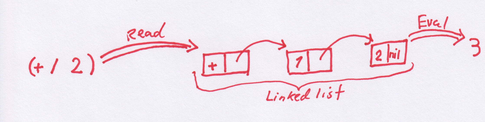
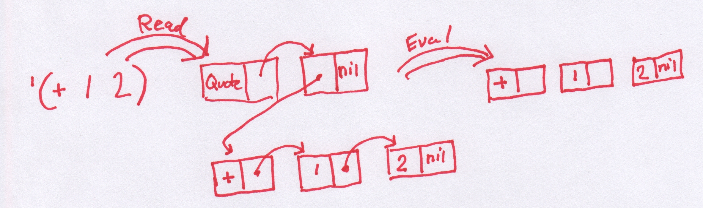
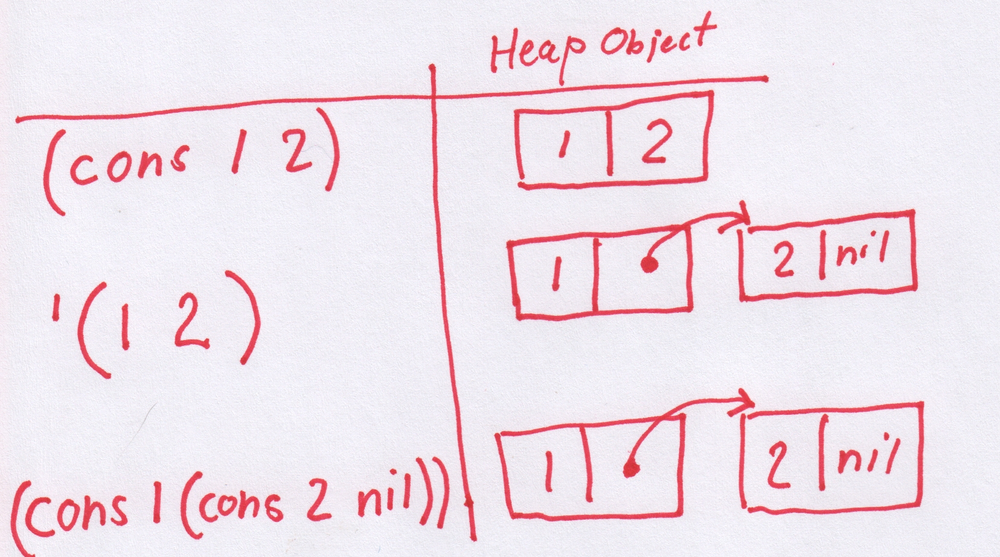

For a while now, not too long, couple of years or so, I have been working in the vicinity of microcontrollers (MCUs). I don't have a whole lot of experience in low-level programming of devices like the STM32 , the NRF52 or the ARM Cortex A9 of the Xilinx Zynq chip on the Trenz ZynqBerry. But I do enjoy learning about them, slowly. The Code in C, Cross-compile, Flash and Debug loop (CCFDL?) is a bit heavy though. Wouldn't it be nice with a REPL (Read, Evaluate and Print Loop)?
The MIT 6.001 Structure and Interpretation of Computer Programs series of lectures is a lot of fun and I recommend everyone to watch it. I watched this lecture series several times while entertaining the idea of some day implement some kind of a Lisp. However, I didn't want to implement a Lisp interpreter in Lisp, or even in Haskell, it would feel a bit like cheating. So instead, the idea is to combine these two newly found interests (MCUs and Lisps).
The lispBM project is my (ongoing) attempt to learn some about lisp while at the same time learn more about MCUs and to make them more accessible to me, once you get used to having a REPL it is hard to go back.
I don't have very much experience or long background in programming numerous Lisps, so my attempt of making one is most likely very naive. A small amount of dabbling with Emacs Lisp and I did like skimming Land Of Lisp but navigating the jungle of Lisp dialects is not where I am at. This means that lispBM is not going to adhere to any standard or be a real Scheme or CL, to me that does not matter!
Now I know that there are many other MCU-lisps. I have tried not to peek at the insides of these at all. But I looked at Lisperator for some tips with the evaluator, I would definitely recommend this tutorial. I have probably stared at the tail-call optimizing evaluator at Lisperator for hours trying to understand what is going on there. I am not going to pretend that I fully understand it yet. Early on I used the MPC Micro Parser Combinators for parsing expressions. This is the same parser generator code that is used in BuidYourOwnLisp. However, when going towards smaller MCUs (with less than 256k of RAM) the MPC library showed to be a bit to hungry on memory and I had to hack something up (more about that in the section about parsing).
Here is a list of other Lisp-on-odd-hardware projects:
I'm sure there are more examples! please let me know what you are working on.
If you want to see lispBM in action, check out the video LISPBM on NRF52 or the video that goes over what went into porting it to NRF52 LISPBM Porting to NRF52.
LispBM is written in C, compiles with -std=c11 flag, for 32bit platforms. So far it has been tried out on x86 (with -m32 flag and depending on something like multilib if you are on a 64bit platform), ARM Cortex M4 (the STM32F4 MCU), ARM Cortex M4 (the NRF52 MCU) and ARM Cortex A9 (The Xilinx Zynq 7000). When deploying lispBM on an MCU it helps a lot to have access to a Hardware Abstraction Layer, HAL. So far lispBM has been compiled into code based on ChibiOs and ZephyrOs both providing a lot of HAL functionality. LispBM has also been tried on the ARM A9 core of the Xilinx Zynq 7000 here depending on the HAL that is provided with the Xilinx toolchain.
The series of MIT video lectures showed a simple elegance and really made me want to try making some kind of a Lisp. If you just get over the strange "prefix" notation where (+ 1 2) means (1 + 2) and instead focus on the really cool part that (+ 1 2) is actually exactly what the expression looks like loaded into memory (the Lisp heap) and that it extends to N arguments (+ 1 2 3 4). When I say that (+ 1 2) is exactly what it looks like in memory, what I mean is that it is stored as a linked list where the first element is the symbol + and the second and third elements of the list are the values 1 and 2. The elements and pointers to the next cell are stored in what is called cons cells. a cons cell consists of enough bytes of memory to hold two pointers or two values or some two element permutation of pointer and value (many of the details of this as implemented in lispBM can be found later in this text). In more detail then, the expression (+ 1 2) will in memory be made up out of a first cons cell containing + in its first position (or car) and a pointer to the next cell in its second (cdr) position. Likewise, the next cell contains the 1 in the car position and a pointer to the next cell in the cdr. The last cell in the linked up structure of cons cells contains a 2 in car and a special symbol called nil in the cdr position to terminate the list.
Now, if we give (+ 1 2) to a Lisp interpreter, it will evaluate it and arrive at the answer 3. The first stage in this, though, is to read the string (+ 1 2) into the heap (generating the linked list of symbols and values), this is called Reading. Following that the lisp interpreter will start to consume the linked list to reduce it to an answer, called evaluating. Finally the result is printed. This is what a REPL does, it reads, evaluates and prints and then it does it all again.

If giving the lisp interpreter a list (such as (+ 1 2)) it will be assumed to mean "add 1 and 2", so how does one actually create a list of data? Giving the list (1 2 3) to the interpreter will not work. The interpreter always treats a list given to it in this way as an application of the function represented by the first element to the rest of the elements. So doing that will give some kind of an error message. There is, However, an operator that tells the interpreter not to evaluate its argument, this operator is called quote and is written ' as in for example '(1 2 3). So when you give the expression '(1 2 3) to the REPL, it will reply with (1 2 3). We have created a list. It is also possible to give the expression '(+ 1 2) to the REPL and this will result in a linked list in memory consisting of elements +, 1 and 2. The REPL will now give (+ 1 2) as the output result of your computation. There is an operation with the reversed meaning as well called eval that means "do evaluate this". As an example the expression (eval '(+ 1 2)) given to the REPL again results in it printing out the answer 3. Together ' and eval are very powerful, it means we can construct code on the fly in memory and then have the interpreter compute the result.
Using ' to create a list works well in some simple cases like above. A more down-to-earth way to create a list is to use the list function.
# (list (+ 1 2) (+ 3 4) (+ 5 6))
> (3 (7 (11 nil)))
If trying to use ' in this case the result would be:
# '((+ 1 2) (+ 3 4) (+ 5 6))
> ((+ (1 (2 nil))) ((+ (3 (4 nil))) ((+ (5 (6 nil))) nil)))
So the difference here is that with list each element is evaluated and what ' really does is to just give back its argument unevaluated. So To make lists, in general, use list, even though ' can be used in some cases (such as '(1 2 3)).

In the paragraphs above there are a couple of words that I emphasized without much explanation. These are words that (as I understand it) are part of the Lisp vocabulary. The heap consists of cons cells, only large enough to hold two pointers or values (or mix there-of) so a symbol (such as +) also has to be represented by a number no larger than a pointer in number of bits. This means that values (characters, signed or unsigned integers), symbols, pointers all can appear on either car or cdr part of a cell. To tell them apart a couple of bits are sacrificed. I will go into the details about this in the section about the heap below.
Before going into the implementation details, I want to give a few examples of lispBM code in order to introduce many of the concepts that we will see again in the following sections.
When starting up the example REPL from the lispBM github repository you see something like this:
Symrepr initialized.
Heap initialized. Heap size: 0.015625 MiB. Free cons cells: 2048
Evaluator initialized.
Extension added.
Lisp REPL started!
Type :quit to exit.
:info for statistics.
#
It shows a prompt where you can type in your lisp expressions or you can type :info for some statistics and information about the current state of the runtime system:
# :info
############################################################
Used cons cells: 402
ENV: ((foldl (closure ((f (i (xs nil))) ((if ((= (xs (nil nil))) ...
Allocated arrays: 0
GC counter: 0
Recovered: 0
Recovered arrays: 0
Marked: 0
Free cons cells: 1646
############################################################
#
This information will show how much of the heap is in use currently and how much is free, how many times garbage collection has been executed and so on. ENV refers to the contents of the environment that will be touched upon shortly in this section.
Now let's explore some of the basic functionality of this REPL.
cons, car and cdrThe cons function is used to construct. What it constructs are cons cells.
# (cons 1 2)
> (1 2)
cons takes two arguments and returns a pair. Used like this, with two values, cons allocates a cons cell from the heap and puts the values in the car and cdr position of that cell. This is not the same as evaluating '(1 2)
# '(1 2)
> (1 (2 nil))

It is a little bit unfortunate that lispBM is printing the result of (cons 1 2) as (1 2). As I understand it, it is common to print this heap structure as (1 . 2) and call it a dotted pair. LispBM does not recognize dotted pairs in reading or uses them in output, should add this to the todo-list.
The car and cdr functions break things apart.
# (car (cons 1 2))
> 1
# (cdr (cons 1 2))
> 2
ifThe conditional if takes three arguments, the first should be something that evaluates to true t or nil for false. The next two arguments are the expressions to evaluate on the then or else branch.
# (if 't 1 2)
> 1
# (if 'nil 1 2)
> 2
definedefine is used to add things to a global environment.
# (define apa 1)
> t
This function application adds an entry into the environment that states that apa is defined to 1. Typing :info in the REPL should show this mapping.
# :info
############################################################
Used cons cells: 547
ENV: ((apa 1) ((foldl (closure ((f (i (xs nil))) ((if ((= (xs (nil nil))) ...
Allocated arrays: 0
GC counter: 0
Recovered: 0
Recovered arrays: 0
Marked: 0
Free cons cells: 1501
############################################################
After defining apa to be 1 this is what it will evaluate to.
# apa
> 1
# (+ 10 apa)
> 11
#
letlet is used to bind a variable (symbol) to a value locally. It takes two arguments where the first is a list of bindings and the second is an expression which will be evaluated in an environment extended with those given bindings.
# (let ((a 10)) (+ a 1))
> 11
If you want to set up more bindings with let it looks like this:
# (let ((a 10) (b 20) (c 30)) (+ a b c))
> 60
It is also possible to nest let bindings and locally override a binding:
# (let ((a 1)) (+ a (let ((a 10)) (+ a a))))
> 21
Below is an example that shows that a local binding also overrides a global binding and that the global binding is left unchanged when leaving the local scope.
# (let ((apa 1000)) (+ apa 1))
> 1001
# apa
> 1
The form of let used in lispBM allows an earlier binding in the list of bindings to be used as part of computations in later bindings.
# (let ((g 1) (h (+ g 1000))) h)
> 1001
lambda and closureNew functions are defined using lambda that takes two arguments a list of parameter names and an expression. Using lambda creates an anonymous function that can be either directly applied or bound to a name using either define or let.
Here is an example of a directly applied anonymous function:
# ((lambda (x) (+ x x)) 2)
> 4
That is a lot of parentheses and may be hard to read. Binding the anonymous function to a name may help a bit.
# (define f (lambda (x) (+ x x)))
> t
# (f 2)
> 4
#
Evaluating the expression (lambda (x) (+ x x)) results in a closure.
# (lambda (x) (+ x x))
> (closure ((x nil) ((+ (x (x nil))) (nil nil))))
The closure looks very similar to the original lambda except that it has one more parameter, an environment. When forming a closure any local bindings that are needed within the expression body of the lambda is sucked into this closure-local environment. This is what makes it possible for us to write functions that return functions. Here is an example of a closure with sucked-in values from the surrounding local scope:
# (let ((y 100)) (lambda (x) (+ x y)))
> (closure ((x nil) ((+ (x (y nil))) (((y 100) nil) nil))))
Here we can see that the binding (y 100) is present in the closure object created.
prognThe progn primitive evaluates a sequence (an arbitrary number of) expressions for side-effects and finally returns the value of the last expression in the sequence as the final result.
# (progn (print "Hello world" \#newline) (+ 1 2))
Hello world
> 3
The print function used in this example is an extension. Extensions are a way to add platform dependent functionality to lispBM. The target platforms have many different ways of dealing with this kind of IO so I don't want to build any expectations on existing methods of presenting text into lispBM itself. There are still a few calls to printf present in lispBM but removing these are on the todo-list.
Here is a larger example that makes combined use of many of the features introduced above. It is a function that computes the nth Fibonacci number in a tail-recursive way. There will be more about tail-recursion in the section about the evaluator.
(define fib (lambda (n)
(let ((fib0 (lambda (n a b)
(if (= n 0) a
(if (= n 1) b
(fib0 (- n 1) b (+ a b)))))))
(fib0 n 0 1))))
(fib 10)This example code evaluates to 55.
With this example we conclude the walk through of some fundamental language constructs that can be used in lispBM programs. From now on this text will be mostly about how these things are implemented.
The implementation of the heap is found in the files heap.c under src and heap.h under include. The heap.h file also contains quite a bit of commentary showing the choices I was contemplating there.
A type called VALUE is defined in typedefs.h and represents values that make sense in a lisp computation. VALUE is really just a 32Bit unsigned integer. I mention VALUE here as it is frequently used throughout. Another type that is quite frequently in use is UINT which is the same size as VALUE but does not necessarily make sense in the lisp world. UINT is used when it is important that the size matches that of a VALUE. Maybe because it will be turned into a VALUE. When it does not matter if a type matches in size with VALUE, I use int or bool or whatever is needed. This is the case when data that is used only internally in the runtime system. I am not very strict on conventions and will at some point try to take a pass over all code and make it a bit more aligned in that sense.
Within the lispBM runtime system a cons cell is represented by the struct:
typedef struct {
VALUE car;
VALUE cdr;
} cons_t;
Where VALUE is defined as:
typedef uint32_t VALUE;
As an example a heap of 1024 cons cells is allocated as follows
cons_t *heap = (cons_t *)malloc(1024 * sizeof(cons_t));
The VALUE type is a 32bit word used to store: symbols (these are special values that represent variables, pieces of syntax and many other things), signed and unsigned integers and characters. The VALUE type is also large enough to hold a pointer within the heap used to set up linked data-structures. But there is also a lot of bookkeeping that needs to be tracked within the 32bit word (an alternative would be to use additional fields within the cons_t structure for this information. This would mean that the whole 32bit word is usable to store data, but it would increase the memory footprint of the heap.).
The information that is kept within the 32bits of a VALUE is:
The binary representation of a pointer stored in either the car or the cdr has the following shape:
Bit pos: 31 30 29 28 27 26 2 1 0
Bit val: 0 0 0 0 0 0 XX XXXX XXXX XXXX XXXX XXXX X 0 0 0
Since the value of the pointer, made up by the Xed out bits above, is only meant to reference other cons cells (which are 8 bytes apart in the allocated heap) the bottom three bits are unused. The zero in position 0 is used to differentiate between pointer and value, thus all pointers will have a zero there and all values will have a one. Bit position 1 is used for the Garbage Collector's mark-bit but only in the car position, in the cdr this bit is unused. Bit position 2 is unused. Depending on how large the heap is there is some number of bits unused on the most significant side as well. The example shows the bits used for a 64MB heap.
For a value there are 28 bits left. Bit 0 and 1 work exactly as in the case above for pointers. That is, bit 0 and 1 are used for differentiation with a pointer and garbage collection. Bits 2 and 3 are used to encode 4 different types of values.
The different types of values are:
That was a lot of text about values for a section about the heap. But these two concepts are pretty tightly linked as all that extra runtime information bookkeeping has to go in there and be available to for example the garbage collector.
After allocating the heap, the next step is to link all the cons cells that it consists of into a single, long, linked list called the free_list.
When a program is requesting a fresh cons cell, for example from a usage of the cons function, the head (car) of the free_list is provided. The free_list variable is then set to the cdr of itself. This operation is performed by the function heap_allocate_cell in file heap.c. If there are no free cells on the free_list the heap allocation returns a symbol indicating out of heap. This will trigger the evaluator to perform a round of garbage collection.
Symbols are represented by text strings in source (or in what you enter into the REPL). So for example if the line (define accumulator 0) is entered into the REPL, accumulator is a symbol. The word define is actually also a symbol.
But as we have seen symbols can live on the heap. This means that the string of text that is the symbol in the source code must be turned into something that can be stored in a VALUE.
In lispBM the files symrepr.h and symrepr.c takes care of this conversion from text strings to integer values. It is also important that the backwards mapping from the integer value to the text string is maintained so that the string representation can be presented to the user of the REPL rather than just some obscure number. There are currently two different implementations maintaining this mapping of symbols as integers to symbols as string and the other way around. One implementation based on a hash-table and one based on a linked-list. The hash-table implementation has a larger memory footprint but should allow for faster lookups while the linked-list implementation uses memory proportional to the number of symbols that have been introduced. When using lispBM on, for example, an STM32 with less memory the linked-list implementation is used.
Symbols are stored on the heap and thus they must fit into a VALUE. This means there are only 28Bits available to represent different symbols since there are 4Bits that represent type and used by garbage collector and so on (28 bits should be plenty enough though!.).
Using the hash-table or the linked-list the conversion process is very similar.
The string representation of a symbol is hashed into a 16Bit value. Actually a value between 0 and 0xFFFE. This means that there can be collisions where 2 different symbols have the same 16Bit id. Collisions are resolved by each bucket of the hash-table (or each element of the linked-list) contain a linked-list of length at most 4096. So if two values collide and have the same 16Bit id, they will get an additional 12Bits of id that depends upon how deeply within the (bucket) linked list they are.
UINT hash_string(char *str, UINT modulo) {
UINT r = 1;
size_t n = strlen(str);
for (UINT i = 0; i < n; i ++) {
UINT sp = small_primes[i % SMALL_PRIMES];
UINT v = (UINT)str[i];
r = (r + (sp * v)) % modulo;
}
return r;
}
The hash_string function is called with a modulo of 0xFFFF which means that the return value can never be 0xFFFF. This frees up 4096 symbols that it is impossible to create from a source string entered by the lispBM programmer. These 4096 symbols are treated specially in the implementation for things like signaling errors and for symbols that are present by default (such as nil and define).
Environments store mappings between symbols and expressions. In lispBM environments are implemented as lists made from cons cells on the heap. The files env.c and env.h contains five functions used to manipulate environments.
VALUE env_set(VALUE env, VALUE key, VALUE val);
VALUE env_lookup(VALUE sym, VALUE env);
VALUE env_copy_shallow(VALUE env);
VALUE env_modify_binding(VALUE env, VALUE key, VALUE val);
VALUE env_build_params_args(VALUE params, VALUE args, VALUE env0);
The function env_set adds a key-value pair to an environment. However, if the key-value binding already exists in the environment then this existing binding is updated instead.
Looking up in the environment is done using the env_lookup function. This function loops over the cons cells that make up the environment and if a key-value pair matches the key provided, the value part is returned. If no binding that matches is found, a special symbol called error_not_found is returned.
The env_set and the env_lookup functions are used by the evaluator to implement the function define and for looking up what variables are bound to as in (+ a b). The rest of the functions, env_copy_shallow, env_modify_binding and env_build_params_args have more specific use cases related to let and closure and applications that will be pointed out in the section about evaluation.
The Current parser used in lispBM is contained in files tokpar.c and tokpar.h. Earlier the MPC library (Parser combinators for C) was used but showed to be too memory hungry for my liking. And before finding MPC I looked briefly at more traditional parser generators such as BNFC, Flex and Bison. But the C code generated from these setups seemed clunky and obscure. I did not really know how to port that code over to an embedded platform. Maybe parser generators specifically for embedded platforms should be a thing? These should generate code with an absolute minimal set of dependencies and they could even require the user of them to implement a small interfacing layer that provides the functionality needed in terms of the operations available in the HAL used. Such generated parser should also use as little memory as possible and maybe be ok with operating in a small (fixed size) memory area provided as an argument from the user.
The parser in lispBM operates on an abstracted character stream that provides four operations: more, get, peek and drop.
more checks if there are elements left in the character stream and returns a boolean.get returns the character at the head of the character stream and removes it from the stream.peek takes an integer offset and returns a character found at the point in the stream (counted from the head of the stream).drop removes N characters from the stream.The reason it is abstracted like this is that lispBM can read both plain strings of ASCII characters as well as a compressed stream of characters. In the case of reading a compressed stream this approach with an arbitrary peek will result in the stream being decoded multiple times (but only up peek-depth), trading compute resources for memory usage.
The printing of expressions is an area that has not been given a lot of love or attention in lispBM. Printing functionality is contained in files print.c and print.h and provides the functions simple_print and simple_snprint. These functions recurse over a heap representation of an expression and can get stuck if the there is a circular structure on the heap, so they must be used carefully.
The simple_snprint prints into a buffer provided from the user and it does not grow that buffer. simple_print, however, uses printf. Here using the snprint variant is preferred, then let some HAL functionality take care of relaying the print buffer to the user maybe over UART. Having a the printf based version is of course convenient when working on X86 (32Bit) under linux for testing and debugging.
The functions that are used in evaluating lispBM expressions is found in the file eval_cps.c with accompanying eval_cps.h file of course. The entry point function here is called eval_cps_program:
VALUE eval_cps_program(VALUE lisp);
The argument lisp should be a list of lispBM expressions on the heap. These will be evaluated from the first to the last one. The result that the last expression evaluates to is returned to the caller of eval_cps_program.
The evaluator used in lispBM is an attempt at a continuation passing style evaluator. While implementing this I looked a lot at Lisperator and it helped me quite a bit. However, writing this in C rather than, I think it was, Javascript introduces some extra complexities. One big difference is that it seems to be possible in javascript to create functions on the fly, which I guess is "impossible" in C (if you don't have some kind of a JIT compilation library in there as well). This is a feature that seems to be quite handy when creating a so-called continuation.
The following code snippet is borrowed from Lisperator:
function evaluate(exp, env, callback) {
switch (exp.type) {
...
case "call":
evaluate(exp.func, env, function(func){
(function loop(args, i){
if (i < exp.args.length) evaluate(exp.args[i], env, function(arg){
args[i + 1] = arg;
loop(args, i + 1);
}); else {
func.apply(null, args);
}
})([ callback ], 0);
});
return;
...
}
}
The code above shows how function application can be evaluated in continuation passing style in a more expressive language than C.
The "call" case above is used to evaluate something like (f a b c) where f is an expression that evaluates to a function (for example a lambda in lispBM). a, b and c are the expressions passed as argument. The application could as an example look like this: (f (+ 1 2) (- 3 2) 1).
So, within the "call" case above, the evaluate function is called with f and an environment as arguments. It is also passed a function that is created on the spot (the continuation), function(func){ ... }.
The continuation function represents what to do next (that is, after evaluating the function itself in this case). The continuation specified here iterates over the arguments arguments to f and evaluates them one after other and puts the results in a list. Once all arguments are evaluated, the function can be applied to them; It is already evaluated into some applicable func object at this point. For more in depth information on this go to Lisperator.
Now, In C it is not (easily) possible to do generate a continuation function in this way. But fortunately it is not necessary to be able to create totally arbitrary functions (at least this is what it seems like to me), just a few different kinds of continuations has to be implemented. Maybe it is possible to think of the approach used in lispBM as a kind of defunctionalized continuation passing style?
The implementation of evaluation in lispBM relies on a stack holding 32Bit words (same size as values) that represents the continuation together with a set of 9 predefined continuation functions that are identified by the following definitions:
#define DONE 1
#define SET_GLOBAL_ENV 2
#define FUNCTION_APP 3
#define FUNCTION 4
#define BIND_TO_KEY_REST 5
#define IF 6
#define ARG_LIST 7
#define EVAL 8
#define PROGN_REST 9
I'm going to try to illustrate how this works by showing a few cases from the evaluator in lispBM. But first a few concepts must be introduced for it to make sense.
While the function cps_eval_program is what the REPL calls, the function that does the actual evaluation is called run_eval.
VALUE run_eval(eval_context_t *ctx);
The run_eval function takes a eval_context_t as argument. There is a global such context that is initiated by the cps_eval_program function before it in turn calls run_eval. The eval context contains and keeps track of environment, current evaluation point and the continuation stack.
typedef struct eval_context_s{
VALUE program;
VALUE curr_exp;
VALUE curr_env;
stack *K;
struct eval_context_s *next;
} eval_context_t;
The very first thing that run_eval does is push a continuation onto the continuation stack:
VALUE run_eval(eval_context_t *ctx){
push_u32(ctx->K, enc_u(DONE));
The DONE continuation will now be present as the only element on the stack. This continuation represents that computation of the program is finished.
Next a run_eval enters into a loop:
VALUE r = NIL;
bool done = false;
bool app_cont = false;
while (!done) {
if (app_cont) {
r = apply_continuation(ctx, r, &done, &app_cont);
continue;
}
...
Some things related to garbage collection are omitted from run_eval at this point. I hope to soon write a text about the garbage collection and will then revisit the evaluater there.
The r variable defined above represents the result of the computation and is what will be returned from run_eval in the end.
What is essential here is that within the loop there is a switch statement that branches depending on what kind of expression is in the variable curr_exp within the context.
VALUE value; // a temporary value used throughout.
switch (type_of(ctx->curr_exp)) {
case VAL_TYPE_I:
app_cont = true;
r = ctx->curr_exp;
break;
If the expression is an integer it is an easy case. The app_cont variable is set to true which means that in the next iteration of the while loop the continuation will be applied.
Another not to tricky case is when curr_exp is a variable.
case VAL_TYPE_SYMBOL:
value = env_lookup(ctx->curr_exp, ctx->curr_env);
if (type_of(value) == VAL_TYPE_SYMBOL &&
dec_sym(value) == symrepr_not_found()) {
r = enc_sym(symrepr_eerror());
done = true;
continue;
}
app_cont = true;
r = value;
break;
In the VAL_TYPE_SYMBOL case the curr_exp represents a symbol and is looked up in the environment. If the symbol is not found the result of the computation is set to an error symbol signaling evaluation error and the done flag is set to true. If the symbol has a binding, r is set to this binding and the next step will apply the continuation.
The VAL_TYPE_SYMBOL case is slightly simplified as shown above. In the actual implementation it also looks up the symbol in the global environment and only if it is not present in either there will be an error. There is also a check if the symbol corresponds to some built in function or some extension. But this is left out from here.
If the curr_exp is a list we end up in the following case:
case PTR_TYPE_CONS:
head = car(ctx->curr_exp);
if (type_of(head) == VAL_TYPE_SYMBOL) {
In the case of a list the evaluator can take many different paths depending on what the first element of that list is. For example, if the first element is the symbol define, the list of expressions represents defining a binding in the global environment. If the first element of the list is `lambda', the list represents a function definition and so on for all the special forms.
Let's look at a few of the possible cases within the PTR_TYPE_CONS case, starting with the ' quote case.
if (dec_sym(head) == symrepr_quote()) {
r = car(cdr(ctx->curr_exp));
app_cont = true;
continue;
}
This case is also one of the simpler ones. r is set to the rest of the list and we apply the continuation.
Now it is time for a more interesting case, define.
if (dec_sym(head) == symrepr_define()) {
VALUE key = car(cdr(ctx->curr_exp));
VALUE val_exp = car(cdr(cdr(ctx->curr_exp)));
if (type_of(key) != VAL_TYPE_SYMBOL ||
key == NIL) {
done = true;
r = enc_sym(symrepr_eerror());
continue;
}
push_u32_2(ctx->K, key, enc_u(SET_GLOBAL_ENV));
ctx->curr_exp = val_exp;
continue;
}
The define form takes two arguments the key and an expression. In lispBM when using define the value expression is evaluated before the key-val binding is created. So the key is bound to the evaluated result of the value expression. There is a small bit of error checking here in case someone tries to rebind nil.
The interesting part is the last three lines. Here the key and the continuation identifier for SET_GLOBAL_ENV are both pushed onto the continuation stack. The curr_exp of the context is set to the value expression and the eval loop starts over. This means that the next thing that will happen is that the value expression is evaluated and once that reduces to a basic case the continuation SET_GLOBAL_ENV will be applied.
One more example to close the circle with the initial example that I got from Lisperator. The function application case.
In the evaluator the function application case is what is used if no other special form (define, lambda, `if', ...) was applicable.
push_u32_2(ctx->K, head, enc_u(FUNCTION));
if (type_of(cdr(ctx->curr_exp)) == VAL_TYPE_SYMBOL &&
cdr(ctx->curr_exp) == NIL) {
// no arguments
app_cont = true;
r = NIL;
continue;
} else {
push_u32_4(ctx->K, ctx->curr_env, NIL,
cdr(cdr(ctx->curr_exp)), enc_u(ARG_LIST));
ctx->curr_exp = car(cdr(ctx->curr_exp));
continue;
}
This starts out by pushing the head of the list (that represents the function) and a value representing the FUNCTION continuation onto the stack. Then either there are no arguments to the function or there are. If there are none we set app_cont and let the continuation proceed. Which will go directly into the FUNCTION continuation and compute it. If there are arguments four things are pushed onto the continuation stack:
ARG_LIST continuation.Then the curr_exp in the context is set to the first element of the argument list and the evaluator loops restarts from the beginning.
So, if the app_cont flag is set when we enter a new iteration of the loop we jump to an apply_continuation function.
VALUE apply_continuation(eval_context_t *ctx, VALUE arg, bool *done, bool *app_cont) {
This function is a huge switch statement that depends on what the top value of the continuation stack is. The first couple of lines look like this. Here the top of the stack is popped, some variables defined, app_cont set to a default false state.
VALUE k;
pop_u32(ctx->K, &k);
VALUE res;
*app_cont = false;
switch(dec_u(k)) {
case DONE:
*done = true;
return arg;
The line above also shows what happen in the case of the DONE continuation. This case sets done to true in order to break the eval loop and returns the argument passed to the continuation as a result.
Let's revisit those cases from the evaluator that pushed continuations. Starting with define that pushed the SET_GLOBAL_ENV continuation.
case SET_GLOBAL_ENV:
res = cont_set_global_env(ctx, arg, done, perform_gc);
if (!(*done))
*app_cont = true;
return res;
It relies on a helper function that updates the actual environment cont_set_global. If this was to fail (fatally) done would be set to true and res will be an error indicating symbol. If it is successful app_cont is set to true and the result (which should be t) is returned.
case FUNCTION: {
VALUE fun;
pop_u32(ctx->K, &fun);
push_u32_2(ctx->K, arg, enc_u(FUNCTION_APP));
ctx->curr_exp = fun;
return NONSENSE; // Should return something that is very easy to recognize as nonsense
}
The FUNCTION continuation pops off the function expression from the stack and then pushes arg that represents the argument list and the FUNCTION_APP continuation to the stack.
Then the context is set up so that the function expression is evaluated into a function object (closure, extension, built in function).
case ARG_LIST: {
VALUE rest;
VALUE acc;
VALUE env;
pop_u32_3(ctx->K, &rest, &acc, &env);
VALUE acc_ = cons(arg, acc);
if (type_of(rest) == VAL_TYPE_SYMBOL &&
rest == NIL) {
*app_cont = true;
return acc_;
}
VALUE head = car(rest);
push_u32_4(ctx->K, env, acc_, cdr(rest), enc_u(ARG_LIST));
ctx->curr_env = env;
ctx->curr_exp = head;
return NONSENSE;
}
The ARG_LIST continuation pops of the environment, accumulator and "rest of the list of arguments" from the stack. It conses the arg (which is the first evaluated argument) to the accumulator and then checks if the "rest of the list of arguments" is empty. In that case we are done and can apply the continuation. If it is not empty a second round of ARG_LIST continuation is initiated in the same way as it was first done in the evaluation function.
So, The point of implementing the evaluator in this convoluted way using continuation passing style. As I understand it (and what experiments seems to show) is that with this evaluator It is possible to evaluate tail-recursive functions such that it does not result in memory usage that grows with each recursive call. One thing I want to be able to run on the microcontrollers are infinite loops. In lispBM I would express such a function as a tail-recursion and it should be possible to run it indefinitely. I think another option would be to transform the program itself (the program to evaluate) into what is called continuation passing style. Then an evaluator for that continuation passing style program could be written in a way that has the same property. I think there are some cases in the evaluator where one has to be very careful with in what order things are done not to fall into the growing stack problem. Also, I have no strong argument that this evaluator is currently totally correct. It does seem to run quite well though!
I hope this gives a taste of how the CPS evaluator works. If you have insights or questions please contact me.
The following set of lispBM functions are included into the binary generated when compiling lispBM and are added to the global environment on startup.
This functionality can be turned on or off at compile-time depending on if _PRELUDE is defined or not.
(define reverse
(lambda (xs)
(let ((revacc (lambda (acc xs)
(if (= nil xs)
acc
(revacc (cons (car xs) acc) (cdr xs))))))
(revacc nil xs))))
(define iota (lambda (n)
(let ((iacc (lambda (acc i n)
(if (> i n)
acc
(iacc (cons (- n i) acc) (+ i 1) n)))))
(iacc nil 0 n))))
(define length (lambda (xs)
(let ((len (lambda (l xs)
(if (= xs nil)
l
(len (+ l 1) (cdr xs))))))
(len 0 xs))))
(define take (lambda (n xs)
(if (num-eq n 0)
nil
(cons (car xs)
(take (- n 1) (cdr xs))))))
(define drop (lambda (n xs)
(if (num-eq n 0)
xs
(if (= xs nil)
nil
(drop (- n 1) (cdr xs))))))
(define zip (lambda (xs ys)
(if ( = xs nil)
nil
(if ( = ys nil)
nil
(cons (cons (car xs) (car ys)) (zip (cdr xs) (cdr ys)))))))
(define map (lambda (f xs)
(if (= xs nil)
nil
(cons (f (car xs)) (map f (cdr xs))))))
(define lookup (lambda (x xs)
(if (= xs nil)
nil
(if (= (car (car xs)) x)
(cdr (car xs))
(lookup x (cdr xs))))))
(define foldr (lambda (f i xs)
(if (= xs nil)
i
(f (car xs) (foldr f i (cdr xs))))))
(define foldl (lambda (f i xs)
(if (= xs nil)
i
(foldl f (f i (car xs)) (cdr xs)))))
EDIT: Here is a simpler variant of the iota function provided by Josef Svenningsson.
(define iota (lambda (n)
(let ((iacc (lambda (acc i)
(if (< i 0)
acc
(iacc (cons i acc) (- i 1))))))
(iacc nil n))))
fundamental.c and fundamental.h).extensions.c and extensions.h).I hope to write about these aspects of lispBM at a later time.
© Copyright 2020 Bo Joel Svensson
This page was generated using Pandoc.